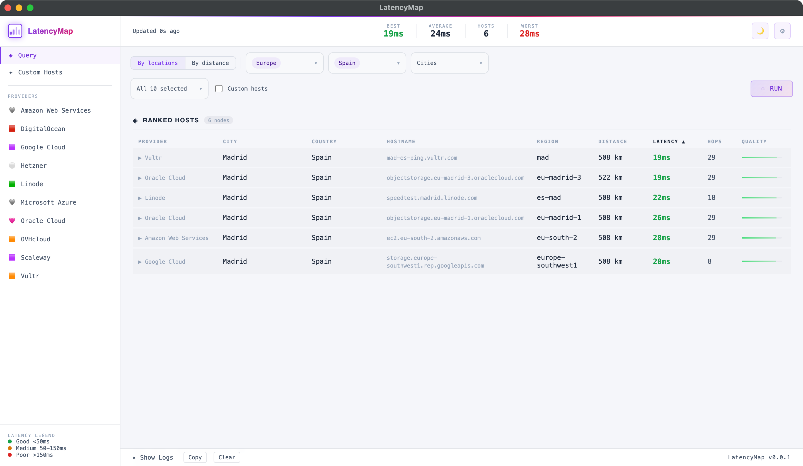
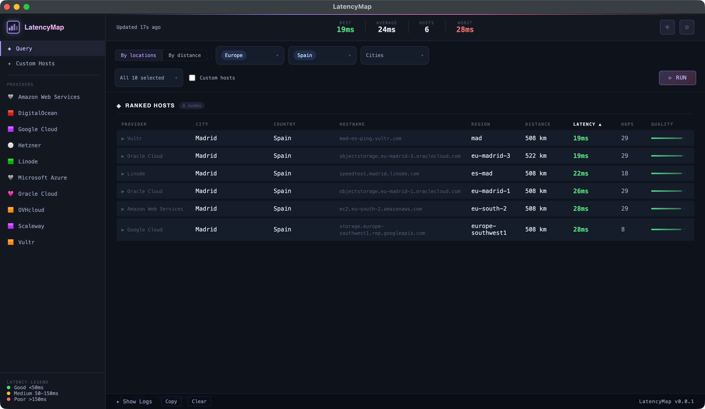

See where your
network stands.
Ping and traceroute to hundreds of cloud endpoints — natively, with no external binaries. Filter by location, sort by distance, measure everything.


What it does
01
Native Ping & Traceroute
Executes OS-level ping and traceroute. No wrappers, no external binaries — raw system calls for accurate per-hop RTT and IP breakdowns.
02
Auto-Updating Catalog
Provider endpoints refresh from the repository every launch. Always current without reinstalling.
03
Geo-Location Filtering
Filter by continent, country, or city. Sort hosts by geographic distance from your coordinates.
04
Custom Hosts
Add your own servers alongside cloud endpoints. Monitor everything from one place.
05
Quality Scoring
Ping, packet loss, and jitter combine into a multi-tiered score. Spot bad connections instantly.
06
Data Visualization
Measurements rendered in an optimized monospace table layout. Dense, readable, precise.
Free. Open source.
Runs everywhere.
Download Latest Release
Windows · macOS · Linux · Unlicense